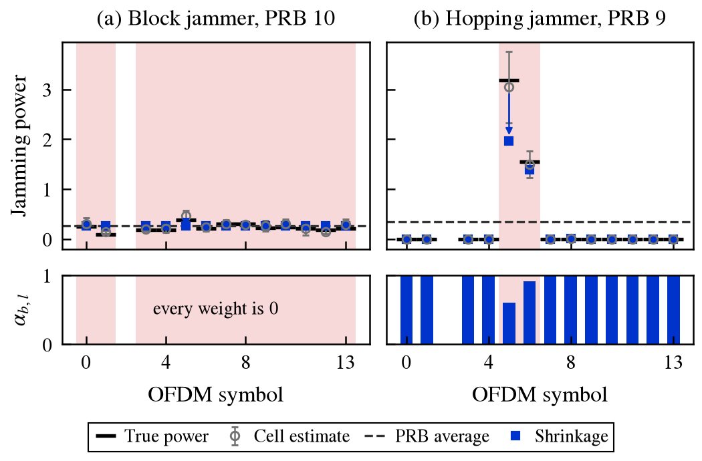
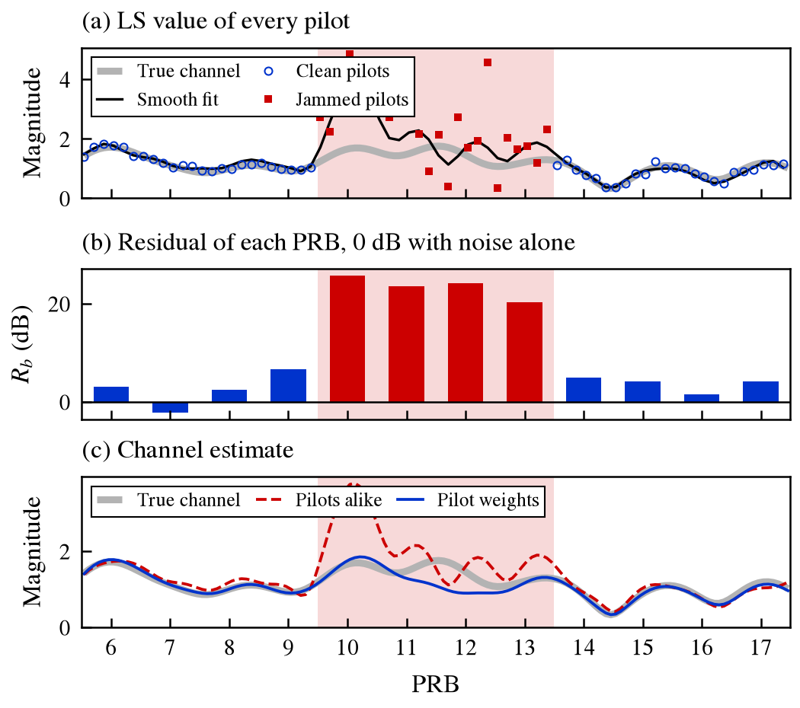

Generated by python -m jamloc.experiments.figures; PDFs for the paper are next to each PNG.
Explanatory figures
system_diagram: Not produced yet - run python -m jamloc.diagrams
unet_process: Not produced yet - run python -m jamloc.experiments.figures --only unet_process
jamming_estimates: Not produced yet - run python -m jamloc.experiments.figures --only jamming_estimates
attack_maps: Not produced yet - run python -m jamloc.experiments.figures --only attack_maps

shrinkage_example: Jamming power of the data cells of one PRB in one slot, (a) under a block jammer that hits every data symbol and (b) under a hopping jammer that hits 2 of them (+9 dB JSR, TDL-C, 15 dB SNR). The bars show the power that reached each cell, the circles each cell's own estimate with one standard error, the dashed line the PRB average and the squares the shrinkage estimate, all in units of the jammer's power per resource element, with jammed symbols shaded and the DMRS symbol 2 left out. Arrows show how far shrinkage moves each estimate, and the bars below give the weight that each cell keeps of its own estimate, at most 0.00 in (a) and between 0.60 and 1.00 in (b).

pilot_weights: Pilot weights in one slot with pilot-only jamming of PRBs 10-13 (+6 dB JSR, TDL-C, 15 dB SNR, the UE on PRBs 6-17). (a) The LS value of every pilot, the smoothest frequency response that a channel with delays up to 3 us can have (the projection onto the delay subspace) and the true channel. (b) The residual of each PRB, the pilot energy outside the subspace over its value without jamming, 20.3 to 25.6 dB on the jammed PRBs and -2.3 to 6.6 dB on the others. (c) The LMMSE channel estimate with every pilot trusted alike and with each pilot's noise variance multiplied by the residual of its PRB. On the jammed PRBs, the normalized squared error is -1.1 dB with the pilots alike and -8.7 dB with the weights, and on the other PRBs -16.3 and -25.5 dB.
after_decoding: Not produced yet - run python -m jamloc.experiments.figures --only after_decoding
system_views: Not produced yet - run python -m jamloc.experiments.figures --only system_views
data_aided_passes: Not produced yet - run python -m jamloc.experiments.figures --only data_aided_passes
attack_patterns: Not produced yet - run python -m jamloc.experiments.figures --only attack_patterns
residual_explained: Not produced yet - run python -m jamloc.experiments.figures --only residual_explained
constellations: Not produced yet - run python -m jamloc.experiments.figures --only constellations
feature_distributions: Not produced yet - run python -m jamloc.experiments.figures --only feature_distributions
detector_outputs: Not produced yet - run python -m jamloc.experiments.figures --only detector_outputs
training_curves: Not produced yet - run python -m jamloc.experiments.figures --only training_curves
constellations_with_map: Not produced yet - run python -m jamloc.experiments.figures --only constellations_with_map
Results
BER/BLER sweep, TDL-A: Not produced yet - run python -m jamloc.experiments.ber_bler --channel A
BER/BLER sweep, TDL-C: Not produced yet - run python -m jamloc.experiments.ber_bler --channel C
Feature maps of one slot per attack: Not produced yet - run python -m jamloc.experiments.feature_maps
Detection, test set: Not produced yet - run python -m jamloc.evaluate --split test
Detection, all jammed cells: Not produced yet - run python -m jamloc.evaluate --split test
Detection, scheduling-aware jammer: Not produced yet - run python -m jamloc.evaluate --split sched
Detection at SNR 5-15 dB: Not produced yet - run python -m jamloc.evaluate --split test --snr-db 5 15
Detection at SNR 15-25 dB: Not produced yet - run python -m jamloc.evaluate --split test --snr-db 15 25
Map-aware recovery, TDL-A: Not produced yet - run python -m jamloc.experiments.recovery --channel A
Recovery ablation, TDL-A: Not produced yet - run python -m jamloc.experiments.recovery --channel A
Map-aware recovery, TDL-C: Not produced yet - run python -m jamloc.experiments.recovery --channel C
Recovery ablation, TDL-C: Not produced yet - run python -m jamloc.experiments.recovery --channel C
The DMRS residual against its theory: Not produced yet - run python -m jamloc.experiments.residual_theory
Conditions never seen in training: Not produced yet - run python -m jamloc.experiments.generalization
Mixed training against unseen conditions: Not produced yet - run python -m jamloc.experiments.robust_training
How small can the U-Net be?: Not produced yet - run python -m jamloc.experiments.size_sweep
Detection before damage: Not produced yet - run python -m jamloc.experiments.detection_margin
False alarms across SNR and under noise-estimation error: Not produced yet - run python -m jamloc.experiments.calibration
Averaging the residual over several slots: Not produced yet - run python -m jamloc.experiments.multislot
Smarter jammers and attack-mixed training: Not produced yet - run python -m jamloc.experiments.attack_training